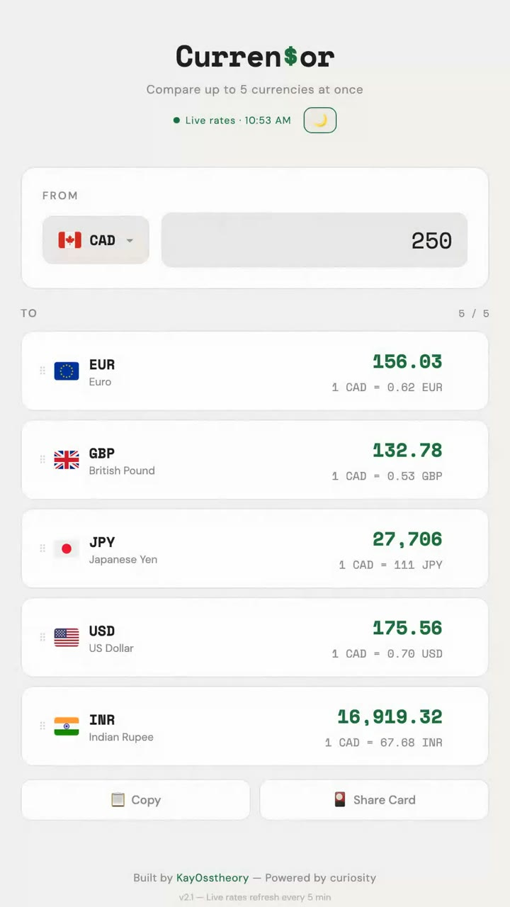

Currensor
LiveGet live exchange rates for 166 currencies, on the web or right inside a Claude or ChatGPT chat. Free, no sign-in.
166currencies inside Claude and ChatGPT
50currencies on the web page, grouped by region
Hourlylive rate refresh
6public listings, including the ChatGPT store
What it does
On the web
- Compare up to five currencies side by side with live rates.
- Never shows a blank: backup rate feeds take over if the main one fails.
- Copy every conversion in one tap, ready for WhatsApp, Slack or email.
- Create a branded picture of any conversion to share.
- Dark and light themes, and a quick phone-friendly currency search.
Inside Claude and ChatGPT
- Ask in plain words and a live Currensor card appears in the chat.
- Change the amount on the card and every currency updates instantly.
- No sign-in and no key needed, for anyone.
Private and open
- Stores only anonymous daily counts, never who you are.
- Free and open source.
- Listed in the ChatGPT store and five public plugin directories.
See it in action
Screenshots

How it works
- You type an amount, on the website or in a Claude or ChatGPT chat
- Currensor fetches live exchange rates
- The website shows every currency you follow at once
- In a chat, the plugin answers with a live conversion card